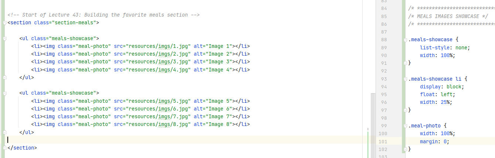
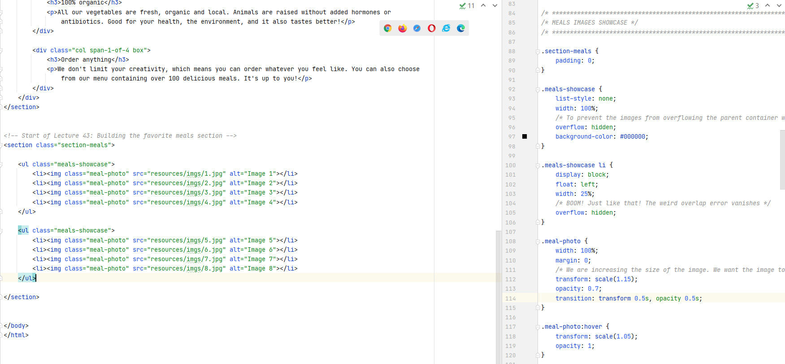
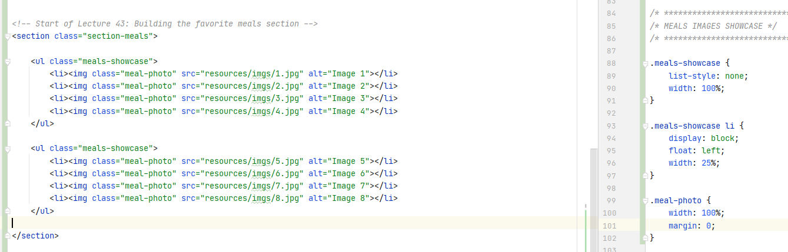
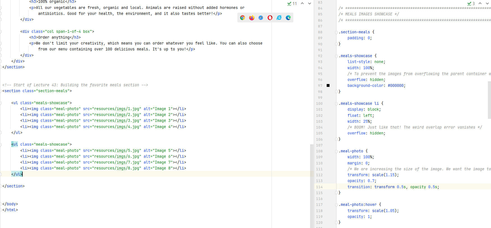

This page contains my notes from the following Udemy lectures:
a) Udemy Course on HTML and CSS Basics by Jonas
a) Udemy Course on HTML and CSS Basics by Jonas
Index for Udemy Course:
Module 2 - Dive into HTML
Module 3 - Formatting with CSS
Module 4 - Web Design Basics
Module 5 - Website Project
Module 2 - Dive into HTML
Lecture 10: Links
- An HTML element is represented like:
- An attribute is additional information about an element. For example,
- Links to other web pages can open either in the same page or in a different page.
<tagName>content</tagName> - An attribute is additional information about an element. For example,
href is an
attribute on the a element. - Links to other web pages can open either in the same page or in a different page.
Module 3 - Formatting with CSS
Lecture 11: Getting started with CSS
- CSS can be used in the following ways:
 - CSS is attached to the html page by pasting this into the head:
- CSS is attached to the html page by pasting this into the head:
- CSS is attached to the html page by pasting this into the head:
<link rel="stylesheet" type="text/css" href="HTML_CSS_Basics.css">
Lecture 12: Starting to make our web page pretty
- Avoid repeating the same styles - meaning - group common property names in a single selector separated by
commas
- Properties are inherited in CSS. When a property is declared on an element, all of the elements that are
inside that element inherit that property. In other words, child elements inherit the properties of their
parent elements. But remember that this behavior varies from property to property.
Not all properties are inherited.
- Also we can override the styles of the parent element by defining a new style with the same name in the child element.
- Also we can override the styles of the parent element by defining a new style with the same name in the child element.
Lecture 13: Colors
- Colors are represented in CSS using the RGB Model.
- Colors are represented using
- If all the six letters in the hex code are the same, for eg.
- In addition to this, colors in CSS can also have transparencies. If we want to include the transparency value, then we cannot use the hex notation to represent colors. Instead we use
- Colors are represented using
#000000. The
first two 00 stand for the Red Channel, next two 00 for the green channel, and last two 00 for the blue
channel. All colors are a combination of these three channels. - If all the six letters in the hex code are the same, for eg.
#555555, we can write it in
shorthand as #555. - In addition to this, colors in CSS can also have transparencies. If we want to include the transparency value, then we cannot use the hex notation to represent colors. Instead we use
rgba(29, 167, 23, 0.75). 0.75 is the transparency value. A value of 0 means the color is
transparent, and a value of 1 means the color is completely solid.
Lecture 14: Classes and ID's
- We prefer classes over id's in html because id's can be used only once in the entire page.
Lecture 15: The CSS Box Model
- The content is where the text and images appear.
- The box model also allows us to set the height and width of an element. The annoying thing about the standard box model is that you can set the height and the width only of the content, not of the entire box itself. What this means is that the
- If you do not specify any margins in your stylesheet, all browsers, by default, add some margins to your elements. You can override these margins by using the universal selector
padding, margin, and
border are properties in CSS and can specified either for the entire box, or for the individual
sides - top, right, bottom, left. - The box model also allows us to set the height and width of an element. The annoying thing about the standard box model is that you can set the height and the width only of the content, not of the entire box itself. What this means is that the
padding, margin, and
border are added to the height and width that we specify. This is not ideal.
- In order to get around this, we use a CSS property called box-sizing and set it to
box-sizing: border-box;.
- In HTML, there are block elements and inline elements. Block elements use the entire width
of the browser and force line breaks. Eg. heading, paragraph elements. Inline elements do not do anything of
this sort. Inline
elements do NOT start on a new line and only takes up as much width as its content. So, if
you try to set any width and height, it will have NO effects. span, img,
a tags are some examples of inline elements. - If you do not specify any margins in your stylesheet, all browsers, by default, add some margins to your elements. You can override these margins by using the universal selector
*.
Lecture 16: Building a simple layout
- Project page linked here.
- This is the expected final setup of the page that we want: - Go to the Udemy
Lecture here.
- Go to the Udemy
Lecture here.
- Enclose the entire content of the page inside a div
- Establish a width for
- Center the
- Divide the
- The blog-posts should occupy 70% of the width of the container and the linked-posts should occupy the remaining 30%.
- To put the linked-posts to the right of blog-posts, we need to use a new property called
- But now the author-details div also floats to the right. So we need a clearfix class to rectify this. Add the clearfix class to the CSS, and add a empty div before the author-details that uses the clearfix class.
- Add some padding to the right side of the blog-posts box using
- Add some spacing from the top of the container using
- Change the color of the hyper links only in the author-details. Use
- If you were resizing images, make sure you change either only the
- This is the expected final setup of the page that we want:
- Go to the Udemy
Lecture here. - Enclose the entire content of the page inside a div
my-container - Establish a width for
my-container using width: 1140px; - Center the
my-container by using margin-left: auto; and
margin-right: auto; properties. - Divide the
my-container div into the three boxes by using div. Because div
elements are block elements, the three divs will be placed one below another right now. - The blog-posts should occupy 70% of the width of the container and the linked-posts should occupy the remaining 30%.
- To put the linked-posts to the right of blog-posts, we need to use a new property called
float. float allows us to push elements to the left or to the right, allowing
other elements to wrap around it. So we put float: left; to both the linked-posts and
the blog-posts. - But now the author-details div also floats to the right. So we need a clearfix class to rectify this. Add the clearfix class to the CSS, and add a empty div before the author-details that uses the clearfix class.
- Add some padding to the right side of the blog-posts box using
padding-right: 30px;.
Remember that padding is within the box. Hence the background will remain colored in this case. Had you used
margin, the background would have been white. - Add some spacing from the top of the container using
margin-top. - Change the color of the hyper links only in the author-details. Use
.author-details a
selector to select only the anchor tags that are in the author-details class. - If you were resizing images, make sure you change either only the
height or only the width
property so that the aspect ratio of the image is preserved. Lecture 18: Relative vs Absolute
- We want to add a date to each post. The date should appear in the right top corner of the div. For this
kind of stuff, we make use of the
- Then we change the CSS of the date element to say
- The entire CSS so far looks like this:
position: absolute and position: relative
- The first thing that we need to make sure is that the parent element is a relative positioned
element. In this case the parent of the date element is the blog-post element. Hence we need
to edit the CSS of blog-post element to say position: relative. - Then we change the CSS of the date element to say
position: absolute and specify the
exact location where we want the element to be placed. We need to explicitly say that the parent has
position: relative, otherwise the browser would not know where to position the absolute element.- The entire CSS so far looks like this:
Module 4 - Web Design Basics
Lecture 30: The Cheat Sheet
Typography
1. Use a font-size between 15 and 25 pixels for body text
2. Use (really) big font sizes for headlines
3. Use a line spacing between 120 and 150% of the font size
4. 45 to 90 characters per line
5. Use good fonts
6. Chose a font which reflects the look and feel you want for your website
7. Use only one font
1. Use a font-size between 15 and 25 pixels for body text
2. Use (really) big font sizes for headlines
3. Use a line spacing between 120 and 150% of the font size
4. 45 to 90 characters per line
5. Use good fonts
6. Chose a font which reflects the look and feel you want for your website
7. Use only one font
Using Colors Like a Pro
1. Use only one base color
2. Use a tool if you want to use more colors
3. Use color to draw attention
4. Never use black in your design
5. Choose colors wisely
1. Use only one base color
2. Use a tool if you want to use more colors
3. Use color to draw attention
4. Never use black in your design
5. Choose colors wisely
Working with Images
1. Put text directly on the image
2. Overlay the image
3. Put your text in a box
4. Blur the image
5. The floor fade
1. Put text directly on the image
2. Overlay the image
3. Put your text in a box
4. Blur the image
5. The floor fade
Working with icons
1. Use icons to list features/steps
2. Use icons for actions and links
3. Icons should be recognizable
4. Label your icons
5. Icons should not take a center stage
6. Use icon fonts whenever possible
1. Use icons to list features/steps
2. Use icons for actions and links
3. Icons should be recognizable
4. Label your icons
5. Icons should not take a center stage
6. Use icon fonts whenever possible
Spacing and layout
1. Put whitespace between your elements
2. Put whitespace between your groups of elements
3. Put whitespace between you website's sections
4. Define where you want your audience to look first
5. Establish a flow that corresponds to your content's message
6. Use whitespace to build that flow
1. Put whitespace between your elements
2. Put whitespace between your groups of elements
3. Put whitespace between you website's sections
4. Define where you want your audience to look first
5. Establish a flow that corresponds to your content's message
6. Use whitespace to build that flow
Module 5 - WebSite Project
Lecture 36: First Development Steps
- You can see the finished page here.
- The HTML created at the end of this section can be seen here..
- The CSS created at the end of this section can be seen here.
- Get the project structure set up with the correct folder formats.
- Pick out a font that you want to use. Include it in the header of the html page.
- Reset the CSS for the entire page:
- Add the following CSS:
- The HTML created at the end of this section can be seen here..
- The CSS created at the end of this section can be seen here.
- Get the project structure set up with the correct folder formats.
- Pick out a font that you want to use. Include it in the header of the html page.
- Reset the CSS for the entire page:
Lecture 37: Setting up fluid grid for responsive web design
- Following are the points to keep in mind to create responsive web design:
a) Fluid Grid: all layout elements are sized in relative units, such as percentages, instead of absolute A
b) Flexible images: are also sized in relative units
c) Media Queries: allow us to specify different CSS style rules for different browser widths.
- Add
- All of our data will be contained within rows. So we create a new class called
a) Fluid Grid: all layout elements are sized in relative units, such as percentages, instead of absolute A
header element works like a normal div
units, such as pixels. b) Flexible images: are also sized in relative units
c) Media Queries: allow us to specify different CSS style rules for different browser widths.
- Add
grid.css to the vendors/css folder. - All of our data will be contained within rows. So we create a new class called
row and assign
it the following styles:
Lecture 38: Building the header
- A
- Add a background image to the div using
- But now you see a problem. The background image only fills the part of the header that has some content. We want the image to fill the entire viewport instead. We do that using
- The image is too zoomed in right now. We want the image to fill the view:
- When we resize the window now, the image cuts off. We want the aspect ratio of the image to changne on window resize such that the entire image is visible irrespective of the window size:
- Now we want to center the
- The next thing is we need to make the background image darker so that we can see the text that is present on the top of it. We do this by adding a image on top of the existing background image:
- Next we want to change the font-size of the header element. But we do not want to specify the font-size in pixels. We have specified the base font-size in our html element as 20px. Relative to that, we do this in the h1 element:
- We can increase the letter-spacing and the word-spacing as well.
- We want to create button for the links.
- A button is by default an inline elements. We can change that to be a inline-block element. An inline-block element is a hybrid between a block and an inline element. An inline-block element does not force a line break, but you can add properties on it like padding and margin, unlike a normal inline element. We can change this by doing
- Right now the button is square. We can make the edges round:
- Add a border to the button:
- Buttons can have 4 different states:
a) link: how the link looks like in the normal state
b) visited: how the link looks like after it has been visited (some links appear grey after having being clicked)
c) hover: when we put our mouse over the button
d) active: when we click on the button
- We want the behavior of the buttons in the normal state and after being visited to remain the same. Hence, we write the following. We are doing this by soecifying the same styles for
- When we hover over or click a button, we want the behavior to be a bit different. We want the background
to get a bit darker. Hence we can do this:
- The transition of the background color from the lighter shade to the darker shade on hover is
instantaneous. We want there to be a slight delay. To give the impression of an animation. We write:
- Now we want to add the
- The nav links are present in the
-
- Below each of the
- What we need to do is define a transparent border on the
- Complete CSS at the end of this looks like this:
header element works like a normal div element. There are other similar
elements like nav, main for the main body, and footer. Using these
elements attaches semantics that are helpful for search engines. They know that this div is a header and not
just another div with a random class applied to it. - Add a background image to the div using
background-image: url("imgs/hero.jpg");. - But now you see a problem. The background image only fills the part of the header that has some content. We want the image to fill the entire viewport instead. We do that using
height: 100vh. - The image is too zoomed in right now. We want the image to fill the view:
background-size: cover; - When we resize the window now, the image cuts off. We want the aspect ratio of the image to changne on window resize such that the entire image is visible irrespective of the window size:
background-position: center; - Now we want to center the
div both horizontally and vertically. We will have to use the
absolute positioning in this case. In order to center the div, we first
position: absolute; top: 50%; left: 50%;. But this means that the starting point of the
div is now position center. We now need to offset it such that the div is centered:
transform: translate(-50%, -50%);. This will translate the element half of it's width to the
left, and half of it's height to the top. - The next thing is we need to make the background image darker so that we can see the text that is present on the top of it. We do this by adding a image on top of the existing background image:
background-image: linear-gradient(rgba(0,0,0,0.7), rgba(0,0,0,0.7)), url("imgs/hero.jpg"); - Next we want to change the font-size of the header element. But we do not want to specify the font-size in pixels. We have specified the base font-size in our html element as 20px. Relative to that, we do this in the h1 element:
font-size: 200%. When we increase the font-size, we try to decrease the
font-weight. We also want to change the heading to uppercase: text-transform: uppercase; - We can increase the letter-spacing and the word-spacing as well.
letter-spacing: 1px; word-spacing: 4px; - We want to create button for the links.
- A button is by default an inline elements. We can change that to be a inline-block element. An inline-block element is a hybrid between a block and an inline element. An inline-block element does not force a line break, but you can add properties on it like padding and margin, unlike a normal inline element. We can change this by doing
display: inline-block;. And now we can add some padding
and margin to this element. a tags also have an underline by default. We can remove this by
doing text-decoration: none; - Right now the button is square. We can make the edges round:
border-radius: 200px; - Add a border to the button:
border: 1px solid #e67e22;. - Buttons can have 4 different states:
a) link: how the link looks like in the normal state
b) visited: how the link looks like after it has been visited (some links appear grey after having being clicked)
c) hover: when we put our mouse over the button
d) active: when we click on the button
- We want the behavior of the buttons in the normal state and after being visited to remain the same. Hence, we write the following. We are doing this by soecifying the same styles for
.btn:link, .btn:visited. link and visited are examples of pseudo
classes.
transition: background-color 0.2s;. We mean that when there is a transition in the
background-color property, there should be a delay of 0.2s. But remember it's not just the
background-color that we are changing. We are also changing the
border and color as well. We can apply a single transition for all of them:
transition: background-color 0.5s, color 0.5s, border 0.5s;. - Now we want to add the
nav element. The logo of the page is intended to go here. - The nav links are present in the
nav element as an ul. Test within the
ul assigned bullets by default. We can override this default behavior by using:
list-style: none;. -
li elements are block elements by default. Hence each of them introduce a line break. We want
all the li elements to appear in a single line. Hence we change the li elements to
display: inline-block;. - Below each of the
li elements in the navbar, we want the element to be
underlined once we hover over that element. But note that just defining this is not going to work properly:
link/visited itself. So the correct
code should look like this:
Lecture 41: Building the features section
- Each page should have only one main
-
-
- We can also add content to the webpage using JUST CSS. We do this by using the
- You should never change the styles of the classes that are being imported from other libraries, i.e.
override the styles present in vendor css files. Always add your own class. For eg:
h1 heading. If you need more headings, use
h2, h3, and so on. -
— gives us a bigger — compared to -. -
text-align: center; aligns the text to the center of the div. - We can also add content to the webpage using JUST CSS. We do this by using the
:after pseudo
class. In this case, we want the element to appear after the h2 heading element. In this
particular case, we do not want to add text. We just want to add a small horizontal line that acts as a
separator. Hence we write the following CSS:
Lecture 43: Building the favorite meals section
- In this lecture we are going to build a grid of images that span the entire width of the screen. The
images will be dark at first, but when you hover over them, the images will get lighter and their size will
increase.
- For the images, we want a total of 8 images, 4 in each row with each row spanning the entire width of the screen. The way to implement this is to have each image as an
- Let's start applying the relevant CSS now.
- Remove the default bullets from the ul elements:
- Have the ul occupy the entire width of the webpage:
- Start styling the li elements within the ul
- Each image should display as a block:
- Instead of each image occurring one below the other, we want the images to be next to each other:
- We have 4 images to display within a width of 100%. Hence for each image:
- Take note of how the widths of the elements are stacked. The
 - We are increasing the size of the image. We want the image to be 115%:
- The reason this happens is that the images are 'overflowing' from their parent container, which as you can see in the html, is the
- Next, when we hover over the image, we want the image to return back to it's original size:
- Next we want to do is animate this transformation in size on hover
- The next effect that we want to create is we want all of the images to be darker initially. Then when we hover over the image that we want, that image becomes darker. All the images in the
a) Change the opacity of the
b) The
- The last thing we want to do is, on hover, change the opacity back to 1 with some animation. 
- For the images, we want a total of 8 images, 4 in each row with each row spanning the entire width of the screen. The way to implement this is to have each image as an
li item in ul. Hence
2 uls, with each ul having 4 li items. Each li in turn
is going to contain one image. Remember that li items can contain anything - text, images, etc.
- Let's start applying the relevant CSS now.
- Remove the default bullets from the ul elements:
list-style: none; - Have the ul occupy the entire width of the webpage:
width: 100%; - Start styling the li elements within the ul
- Each image should display as a block:
display: block; - Instead of each image occurring one below the other, we want the images to be next to each other:
float: left; - We have 4 images to display within a width of 100%. Hence for each image:
width: 25%; - Take note of how the widths of the elements are stacked. The
ul element takes the entire
available width of the webpage. Each li element within the ul takes a width of
25% of it's parent container - the parent in this case being ul. Hence width of each
li is also computed as 25%. Each img within the li takes a width of
100% of it's parent container - the parent container in this case being the li. Hence the image
still occupies only 25% of the screen width. Even after you resize the screen, you can see the entire image
being visible.  - We are increasing the size of the image. We want the image to be 115%:
transform: scale(1.15);. You can see in the browser that this means the images will no longer
fir in the width of the browser and we now see the horizontal scrollbar appear to accommodate the images.
- The reason this happens is that the images are 'overflowing' from their parent container, which as you can see in the html, is the
meals-showcase class. Hence we need to tell CSS to hide any overflow,
which we do by adding overflow: hidden; to the meals-showcase class. - Next, when we hover over the image, we want the image to return back to it's original size:
transform: scale(1.05);. Scaling to 1.05 instead of 1 because scaling to 1 causes a white gap
to appear between the images. - Next we want to do is animate this transformation in size on hover
transition: transform 0.5s; - The next effect that we want to create is we want all of the images to be darker initially. Then when we hover over the image that we want, that image becomes darker. All the images in the
meals-showcasecan be made darker by following these two steps: a) Change the opacity of the
meals-showcase container to 0.7 (important that you change the
opacity here. Else you get weird overlap errors). But now the image becomes lighter, and this is because the
background of the image is white. Hence the next step is to make the background color of the image container
as black. b) The
meals-showcase has the opacity set to 0.7. Hence we change the background-color of it's
parent color to black. - The last thing we want to do is, on hover, change the opacity back to 1 with some animation. 
Lecture 45: Building the how-it-works section
- Refer the Udemy
Lecture here. Too much is going on over here to write it all down. And also I am lazy...
- How do we add a clickable image that serves as a button:
- We have two useful pseudo selectors:
-
- We want to add numbers to the steps - numbers 1, 2, 3 and circle them. Go through the CSS for this.
- Format the buttons to to have the same size
- Another pseudo-selector is
- When you define some floats, you also have to clear thos flows. This is where we normally use the
- What methods of clearfix can I use on SO.
- How do we add a clickable image that serves as a button:
<a href="link-you-want-to-go-to"><img src="your-image.png"></a> - We have two useful pseudo selectors:
.steps-box:first-child and .steps-box:last-child. These will select the first and
the last elements which have the steps-box class applied to it. -
text-align does not only align the text, but any inline image within the box is also aligned.
Images are inline element. Hence, text-align can be used to align images within the box as
well. - We want to add numbers to the steps - numbers 1, 2, 3 and circle them. Go through the CSS for this.
- Format the buttons to to have the same size
- Another pseudo-selector is
last-of-type. What
is the difference between first-of-type and first-child. - When you define some floats, you also have to clear thos flows. This is where we normally use the
clearfix
hack that we talked about earlier. You can check whether you require the clearfix by looking at
the height of the floated element. If the height is 0, it means that you will have to clear the flow. - What methods of clearfix can I use on SO.
Lecture 47: Building the Cities Section
- Main takeaway was how are we going to align icons with text. Refer
the lecture here
if you want to see how the icons are supposed to look like in the page.
- If you want to align the icons, you do the following:
- If you want to align the icons, you do the following:
Lecture 49: Building the Customer Testimonials Section
- We want to include testimonials from our customers, which is basically comments provided by our customers
on our services. HTML has a
- Add a background image to the testimonials section:
- Have the image fill the entire background:
- Make the background image darker by overlaying a dark gradient on top of the image
- Make the text white:
- Make the background image static so that when the page is scrolled, the position of the image remains fixed:
- Whenever you want to include italic text in your webpage, you have to make sure that you have included italic fonts as well in your page, like you have done in the header element of this page.
- The
- We want to add a quotation mark before the text of the testimonial starts. Recall that content can be added to the webpage just through CSS only. We will define the position of the blockquote as
blockquote element that indicates that the enclosed text is an
extended quotation. Usually, this is rendered visually by indentation. - Add a background image to the testimonials section:
background-image: url("imgs/back-customers.jpg"); - Have the image fill the entire background:
background-size: cover; - Make the background image darker by overlaying a dark gradient on top of the image
background-image: linear-gradient(rgba(0,0,0,0.8), rgba(0,0,0,0.8)),
url("imgs/back-customers.jpg"); - Make the text white:
color: #ffffff; - Make the background image static so that when the page is scrolled, the position of the image remains fixed:
background-attachment: fixed; - Whenever you want to include italic text in your webpage, you have to make sure that you have included italic fonts as well in your page, like you have done in the header element of this page.
- The
vertical-align CSS property sets vertical alignment of an inline, inline-block or
table-cell box. Set vertical-align: middle; for the name of the person to appear vertically
center aligned to the image. - We want to add a quotation mark before the text of the testimonial starts. Recall that content can be added to the webpage just through CSS only. We will define the position of the blockquote as
absolute. Recall that for an element to be positioned as absolute, we need the
parent element to be positioned as relative or else the changes are not going to take effect.
Lecture 51: Building the Sign-Up Section
- We use the
- Remember that certain CSS properties are inherited. For example, consider the following CSS for a
- There is a special character that you can add for space in HTML:
- Adding
span element in order to style some text in a p, or some other
enclosing element, in a way that is different from the styling that has eben applied to the parent element.
- Remember that certain CSS properties are inherited. For example, consider the following CSS for a
span
element that is within the plan-price class.
.
Source
on SO.
- Adding
box-shadow: 0 2px 2px #e3e3e3;
Lecture 53: Building the Contact Form
- Read this: A complete guide to CSS
Links and Buttons.
- Do you really understand forms? MDN Tutorial on Forms.
- Read about how to use radio buttons in forms here on MDN.
- Read about how to use checkboxes and multiple checkboxes in forms here on MDN.
- Refer the Udemy Lecture here to see the HTML that is used to build a form.
- Button styles on Submit Button disappear after applying the
- The complete form HTML looks like this:
- The CSS for the form looks like this. A few new ways of styling elements were covered. Look at the
lecture.
- Do you really understand forms? MDN Tutorial on Forms.
- Read about how to use radio buttons in forms here on MDN.
- Read about how to use checkboxes and multiple checkboxes in forms here on MDN.
- Refer the Udemy Lecture here to see the HTML that is used to build a form.
- Button styles on Submit Button disappear after applying the
:visited and :link
pseudo-classes to the input[type=submit] button - semi-anser here
on Udemy. - The complete form HTML looks like this:
Lecture 55: Building the Footer
- Question: how do you make a footer stick to the bottom of the screen when your content does not occupt the
entire height of the screen? Read here on CSS
Tricks.
Module 6 - ResponsiveWeb Design with Media Queries
Lecture 57: Making the webpage responsive
-